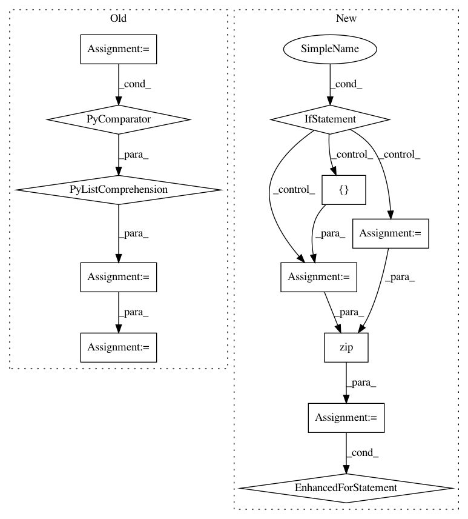

eba587e7549e252036f2500e9a3b3a18a778b335,dataset/batch_image.py,ImagesBatch,assemble,#ImagesBatch#Any#,250
Before Change
message = str(e)
if "must have the same shape" in message:
min_shape = np.array([x.shape for x in all_res]).min(axis=0)
all_res = [arr[:min_shape[0], :min_shape[1]].copy() for arr in all_res]
new_images = np.stack(all_res)
setattr(self, component, new_images)
return self
@action
After Change
raise RuntimeError("Could not assemble the batch")
components = kwargs.get("components", "images")
if isinstance(components, (list, tuple)):
all_res = list(zip(*all_res))
else:
components = [components]
all_res = [all_res]
for component, res in zip(components, all_res):
self.assemble_component(all_res, component)
setattr(self, component, new_data)
return self
@action
def convert_to_pil(self, components="images"):
In pattern: SUPERPATTERN
Frequency: 3
Non-data size: 12
Instances
Project Name: analysiscenter/batchflow
Commit Name: eba587e7549e252036f2500e9a3b3a18a778b335
Time: 2017-11-17
Author: rhudor@gmail.com
File Name: dataset/batch_image.py
Class Name: ImagesBatch
Method Name: assemble
Project Name: keras-team/keras
Commit Name: 94dbc3042f5a85b399f5ce2859d4e8fbafd235b9
Time: 2017-07-06
Author: me@taehoonlee.com
File Name: tests/keras/backend/backend_test.py
Class Name:
Method Name: check_single_tensor_operation
Project Name: keras-team/keras
Commit Name: 94dbc3042f5a85b399f5ce2859d4e8fbafd235b9
Time: 2017-07-06
Author: me@taehoonlee.com
File Name: tests/keras/backend/backend_test.py
Class Name:
Method Name: check_two_tensor_operation